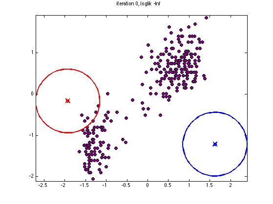
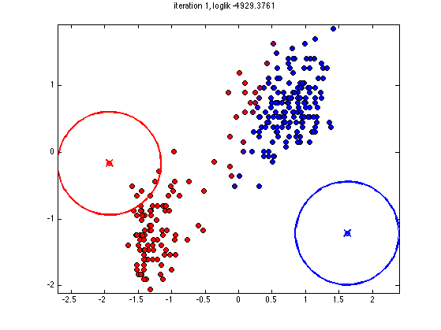
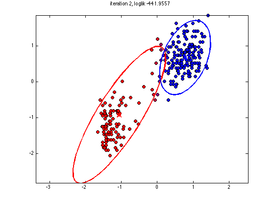
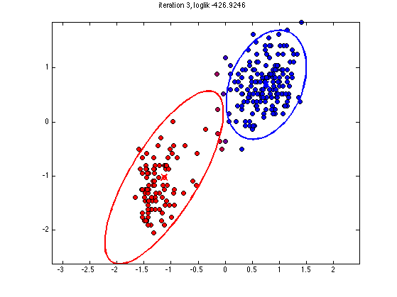
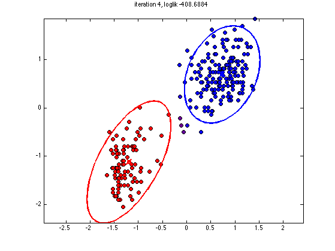
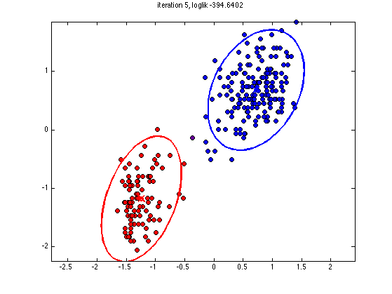
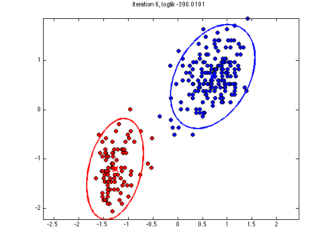
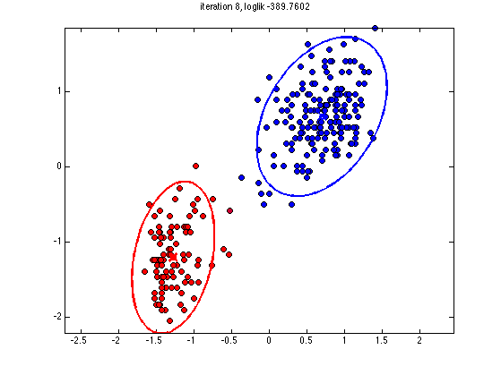

Visualize fitting a mixture of Gaussians to the old faithful dataset
reproduce Bishop fig 9.8
% This file is from pmtk3.googlecode.com function mixGaussDemoFaithful setSeed(0); K = 2; X = loadData('faithful'); X = standardizeCols(X); [N,D] = size(X); % specify initial params to make for a pretty plot initParams.mu = [-1.5 1.5; 1.5 -1.5]' + 1*randn(2,2); initParams.Sigma = repmat(0.1*eye(2),[1 1 K]); initParams.mixWeight = normalize(ones(1,K)); model = mixGaussCreate(initParams.mu, initParams.Sigma, initParams.mixWeight); plotfn(model, X, struct('weights', mkStochastic(ones(N,K))), -inf, 0); % Fit [model, loglikHist] = mixGaussFit(X, K, 'initParams', initParams, ... 'maxIter', 10, 'plotfn', @plotfn); % Plot objective function figure; plot(loglikHist, 'o-', 'linewidth', 3) xlabel('iter') ylabel('average loglik') end function plotfn(model, X, ess, loglik, iter) post = ess.weights; mu = model.cpd.mu; Sigma = model.cpd.Sigma; str = sprintf('iteration %d, loglik %5.4f\n', iter, loglik); n = size(X, 1); colors = [post(:,1), zeros(n, 1), post(:,2)]; % fraction of red and blue figure; hold on; for i=1:n plot(X(i, 1), X(i, 2), 'o', 'MarkerSize', 6, 'MarkerFaceColor', colors(i, :), 'MarkerEdgeColor', 'k'); end classColors = 'rb'; K = size(mu,2); for k=1:K gaussPlot2d(mu(:,k), Sigma(:,:,k), 'color', classColors(k)); plot(mu(1,k), mu(2,k),'o','linewidth',2, 'color', classColors(k)); end title(str) axis equal box on set(gca, 'YTick', -2:2); %pause end
initializing model for EM 1 loglik: -4929.38 2 loglik: -441.956 3 loglik: -426.925 4 loglik: -408.688 5 loglik: -394.64 6 loglik: -390.019 7 loglik: -389.769 8 loglik: -389.76       